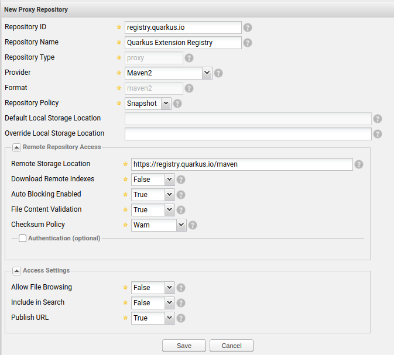
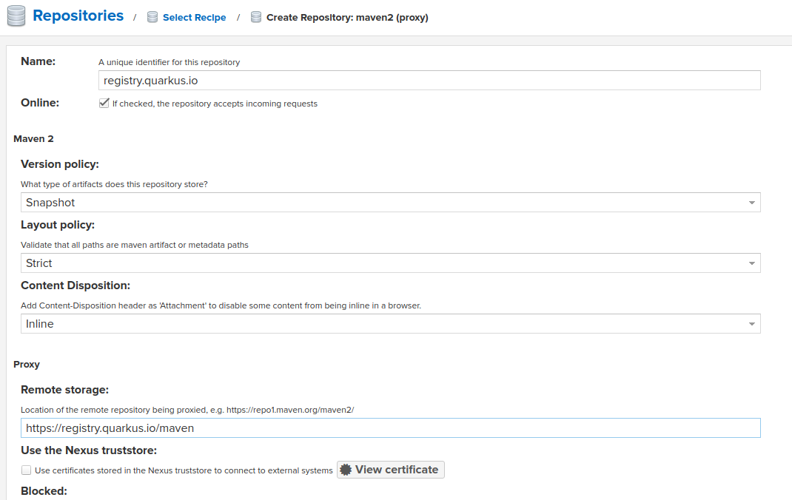

Quarkus Extension Registry
Quarkus CLI 、 Maven 、 Gradle プラグインなどのQuarkus開発ツール、または code.quarkus.io を使用して、Quarkusエコシステムを一覧表示し、特定の条件に一致するエクステンションを検索できます。Quarkusエコシステムには、 Quarkusプラットフォーム エクステンションや、コミュニティによって提供されたその他のさまざまなエクステンションが含まれ、その多くは Quarkiverse Hub でホストされています。
利用可能なすべてのQuarkusエクステンションに関する情報は、 Quarkusエクステンションレジストリ によって開発ツールに提供されます。
Quarkusのエクステンションレジストリは、以下の情報を提供するデータベースです。
-
利用可能なQuarkusプラットフォームのうち、どのプラットフォームが新規プロジェクトやアップデートに推奨されているか。
-
利用可能なプラットフォーム以外のエクステンションについて、それらがどのQuarkusバージョンと互換性があるか
registry.quarkus.io
registry.quarkus.ioにあるレジストリは、デフォルトのQuarkusコミュニティエクステンションレジストリです。このレジストリは、 Quarkusコミュニティプラットフォームのリリースごとに更新され、 Quarkiverse Hubにホストされているエクステンションも含まれます。
Mavenリポジトリ
registry.quarkus.ioにあるレジストリは、Maven スナップショット リポジトリであり、プラットフォームとエクステンションカタログをMaven JSONアーティファクトとして開発ツールに提供します。エクステンションカタログはダウンロードされると、ユーザーのローカルMavenリポジトリにキャッシュされ、インターネットネットワーク（またはレジストリ自体）が利用できない場合でも、開発ツールで利用できます。
ローカルにキャッシュされたエクステンションカタログアーティファクトは、定期的に更新がチェックされ、それらのカタログの新しいバージョンがレジストリで利用可能な場合は更新されます。更新をチェックするデフォルトの間隔は 毎日 で、これはSNAPSHOTアーティファクトのデフォルトのMavenリポジトリ updatePolicy に一致します。
Mavenリポジトリの設定
以下のリポジトリの設定は、説明のためだけに示されており、ユーザーの settings.xml やアプリケーションの pom.xml に追加する必要はあり ません。Quarkusの開発ツールには、このリポジトリがあらかじめ設定されています。
|
registry.quarkus.io の Mavenリポジトリ設定は以下の通りです。
<repository>
<id>registry.quarkus.io</id>
<name>Quarkus community extension registry</name>
<url>https://registry.quarkus.io/maven</url>
<snapshots>
<enabled>true</enabled>
<updatePolicy>daily</updatePolicy>
<checksumPolicy>warn</checksumPolicy>
</snapshots>
</repository>Quarkus開発ツールが初期化されると、このリポジトリ設定が自動的にMavenリゾルバに追加され、 registry.quarkus.io からのプラットフォームおよびエクステンションカタログの解決に使用されます。
Mavenリポジトリのミラーとプロキシ
Quarkus dev toolsのMavenリゾルバが初期化されると、ユーザー settings.xml の関連するMavenミラーとプロキシは、あたかも registry.quarkus.io Mavenリポジトリがユーザー settings.xml で構成されているかのように、自動的に registry.quarkus.io Mavenリポジトリ設定に適用されます。
つまり、例えば registry.quarkus.io Maven リポジトリに一致する Maven リポジトリミラーを適用した場合、 registry.quarkus.ioMaven リポジトリを対応する Maven サーバーインスタンス (Nexus など) のミラーリポジトリグループに追加する必要があります。
デフォルトのレジストリMavenリポジトリ設定の上書き
デフォルトのレジストリ Maven リポジトリ設定は、実際にはユーザー settings.xml において、 registry.quarkus.io をその <id> の値として希望の <repository> 設定を追加するだけで、上書きすることができます。そのようなリポジトリ構成がユーザー settings.xml で見つかった場合、開発ツールは上述のデフォルトの registry.quarkus.io リポジトリ構成の代わりにそれを使用します。
Quarkus Extensionのレジストリクライアント設定
通常、Quarkusのコミュニティユーザーは、自分の環境でレジストリ関連の設定を行う必要はありません。 registry.quarkus.io にホストされているレジストリは、デフォルトですべてのQuarkus開発ツールで有効になっています。しかし、カスタムのレジストリクライアント設定が役立つ場面がいくつかあるかもしれません。例えば、ローカルレジストリキャッシュのアップデートポリシーの変更や、追加の（デフォルトではない）Quarkusエクステンションレジストリの設定などです。
レジストリクライアント設定の位置
Quarkus開発ツールを起動すると、以下の手順でレジストリクライアント設定ファイルの検索が行われます。
-
quarkus.tools.configシステムプロパティがチェックされ、存在すればその値がレジストリクライアント設定ファイルへのパスとして使用されます。 -
カレントディレクトリに
.quarkus/config.yamlファイルが存在するかどうかを確認し、ファイルが存在すれば、それを使用してレジストリクライアントが設定されます。 -
ユーザーのホームディレクトリに
~/.quarkus/config.yamlファイルが存在するかどうかを確認し、ファイルが存在する場合は、それを使用してレジストリクライアントを設定します。 -
上記のいずれの手順でも設定ファイルが見つからない場合は、デフォルトの registry.quarkus.io 設定が使用されます。
複数のレジストリーを設定
registry.quarkus.io はデフォルトのQuarkusコミュニティエクステンションレジストリですが、常に唯一のレジストリであることを意図しているわけではありません。他の組織が、独自のQuarkusエクステンションレジストリを作成し、独自の Quarkusプラットフォームや 個別の（プラットフォーム以外の）Quarkusエクステンションを提供すると便利だと考えるかもしれません。自分の環境でカスタムのQuarkusエクステンションレジストリを有効にしたい場合は、レジストリのクライアント設定ファイルに追加する必要があります。
レジストリクライアント設定ファイルは、レジストリのリストを含むシンプルなYAMLファイルです。例えば以下のようになります。
registries:
- registry.acme.org
- registry.quarkus.io上記の設定では、 registry.acme.org と registry.quarkus.io の2つのレジストリが有効になります。レジストリの順序は実際に重要です。Quarkusの開発ツールがユーザーの要求に応じてエクステンションを探す場合、レジストリは設定された順、つまりリストの上から下に向かって検索されます。最初に見つかったエクステンションやプラットフォームは、ユーザーが好むものとして扱われます。
registry.quarkus.io はデフォルトのレジストリで、通常は明示的に設定する必要はありませんが、ユーザーがカスタムレジストリリストを提供し、その中に registry.quarkus.io が含まれていない場合は、 registry.quarkus.io は有効になり ません 。
|
たとえば、以下は、デフォルトの registry.quarkus.ioレジストリをカスタムのものに置き換えるレジストリクライアント設定です。
registries:
- registry.acme.orgLimiting extension catalog to an offering
| This feature was introduced in Quarkus 3.26.0 and will be evolving in the upcoming versions. |
As described in Extension offering metadata, extensions may be associated with a one or more offerings delivered and supported by a dedicated team or an organization.
A Quarkus extension registry client may be configured to limit the extension catalog provided by the registry to a specific offering. For example, with the following configuration, assuming registry.acme.org provides extensions associated with multiple offerings, only those extensions associated with acme-cloud offering will be returned by the registry client:
registries:
- registry.acme.org:
offering: acme-cloud (1)
- registry.quarkus.io| 1 | limits the extension catalog provided by registry.acme.org to the extensions that make up the acme-cloud offering. |
| If an offering is not configured, the complete catalog of extensions returned by the registry will be provided to the user. |
Only one offering can be configured per registry at this point.
レジストリキャッシュ更新ポリシーの調整
通常、Quarkusのエクステンションレジストリは、Mavenスナップショットリポジトリとして実装されます。レジストリからMavenアーティファクトとして解決されたプラットフォームおよびエクステンションカタログは、ユーザーのローカルMavenリポジトリにキャッシュされます。プラットフォームとエクステンションカタログは、実際には、レジストリクライアントによって定期的に更新がチェックされる SNAPSHOT アーティファクトです。更新をチェックするレジストリのデフォルトの間隔は、Maven の updatePolicy snapshot repositories のデフォルト値と一致しており、 daily となっています。このデフォルトは、例えばレジストリ設定で上書きすることができます:
registries:
- registry.acme.org:
update-policy: "always"
- registry.quarkus.io上記の例では、 registry.acme.org レジストリは、カタログ要求ごとにカタログの更新がチェックされ、 registry.quarkus.io レジストリは、1日1回（その日の最初のカタログ要求時）にカタログの更新がチェックされます。
以下がレジストリの update-policy の値の選択肢の完全なリストです。
-
always- カタログ要求のたびに更新情報を確認する
-
daily（デフォルト） - 1日1回、最初のカタログ要求時に、カタログの更新をチェック
-
interval:X (Xは整数、分単位) - 分単位のカスタム間隔。
-
never - カタログを一度解決すると、更新をチェックしない
設定でレジストリを無効化
設定ファイルに記載されているすべてのレジストリは、デフォルトで有効になっています。その設定に enabled: false を追加することで、レジストリを無効にすることができます。例えば、以下のようになります。
registries:
- registry.acme.org
- registry.quarkus.io:
enabled: false上記の設定では、 registry.acme.org のみが有効です。上記の設定は、以下と同等です。
registries:
- registry.acme.orgデバッグモードの有効化
レジストリクライアントは、デフォルトでは多くの情報をログ出力していません。しかし、舞台裏でMavenリポジトリから様々なアーティファクトを解決します。アーティファクトの転送やその他のデバッグ関連のメッセージをログに記録したい場合は、設定でデバッグモードを有効にすることができます。例えば、以下のようになります。
debug: true
registries:
- registry.acme.org
- registry.quarkus.ioレジストリのURLを上書きする
レジストリのURLが変更される場合がありますが、IDは同じである必要があります。（Mavenの座標が照会されるため）レジストリのURLを上書きするには、次のように追加します:
registries:
- registry.acme.org
- registry.quarkus.io:
maven:
repository:
url: https://internal.registry.acme.org/mavenNexusリポジトリプロキシとして登録する方法
QuarkusエクステンションレジストリをNexusリポジトリプロキシとして登録できます。これらの操作を行うには、管理者である必要があります。
Nexus 2.x
いくつかのオプションを設定する必要があります。
-
Repository PolicyをSnapshotに設定 -
Download Remote Indexesを無効化; -
Allow File Browsingを無効化; -
Include in Searchの無効化.
以下は、その例です。

Nexus 3.x
-
maven2(proxy)リポジトリの作成 -
Version PolicyをSnapshotに設定 -
Remote StorageURLを設定します。https://registry.quarkus.io/maven

Environment Variables
Applications using a registry client can be configured using environment variables.
QUARKUS_REGISTRIES environment variable can be used to specify which registries should be enabled as a comma-separated list of registry IDs.
For example
QUARKUS_REGISTRIES=registry.acme.org,registry.quarkus.io
That alone will be enough to initialize a registry client to pull extension catalogs from two registries using their default configurations.
Certain registry options could be initialized with their specific environment variables. Each such option will have the following environment variable prefix:
QUARKUS_REGISTRY_<UPPERCASED_AND_UNDERSCORED_REGISTRY_ID>_
where <UPPERCASED_AND_UNDERSCORED_REGISTRY_ID> is a registry ID with each character converted to uppercase and a . replaced with _. For example, REGISTRY_ACME_ORG.
Below are examples of various options that can be configured following this approach.
Repository URL
QUARKUS_REGISTRY_<UPPERCASED_AND_UNDERSCORED_REGISTRY_ID>_REPO_URL=<REPO_URL>
例:
QUARKUS_REGISTRY_REGISTRY_ACME_ORG_REPO_URL=https://internal.registry.acme.org/maven
Update policy
QUARKUS_REGISTRY_<UPPERCASED_AND_UNDERSCORED_REGISTRY_ID>_UPDATE_POLICY=<UPDATE_POLICY>
例:
QUARKUS_REGISTRY_REGISTRY_ACME_ORG_UPDATE_POLICY=always
Offering
QUARKUS_REGISTRY_<UPPERCASED_AND_UNDERSCORED_REGISTRY_ID>_OFFERING=<OFFERING>
例:
QUARKUS_REGISTRY_REGISTRY_ACME_ORG_OFFERING=acme-magic
Recommend Streams From
Set the oldest acceptable stream value per platform. Streams older than the configured values will be ignored by the client.
QUARKUS_REGISTRY_<UPPERCASED_AND_UNDERSCORED_REGISTRY_ID>_RECOMMEND_STREAMS_FROM_<UPPERCASED_AND_UNDERSCORED_PLATFORM_KEY>=<STREAM_ID>
Where UPPERCASED_AND_UNDERSCORED_PLATFORM_KEY is a platform key with each character converted to uppercase and a . replaced with _. For example, IO_QUARKUS_PLATFORM.
例:
QUARKUS_REGISTRY_REGISTRY_ACME_ORG_RECOMMEND_STREAMS_FROM_IO_QUARKUS_PLATFORM=3.27